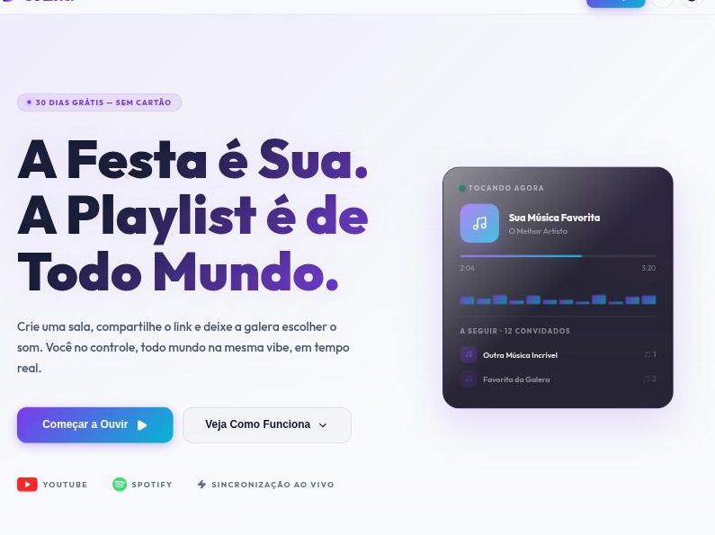

Go Lister
LiveA real-time collaborative music platform: one room, one link, and a queue everyone controls playing in sync. Kotlin/Spring Boot backend, three React frontends, and a Chromecast receiver.

The problem
Keeping several devices on the same second of the same song, when each provider exposes playback differently — and the browser won't let you authenticate a WebSocket properly.
The decision
The server owns the queue and the clock. The WebSocket is authenticated by ticket instead.
The consequence
nginx became the only ingress to the backend, with TLS terminated at Cloudflare.